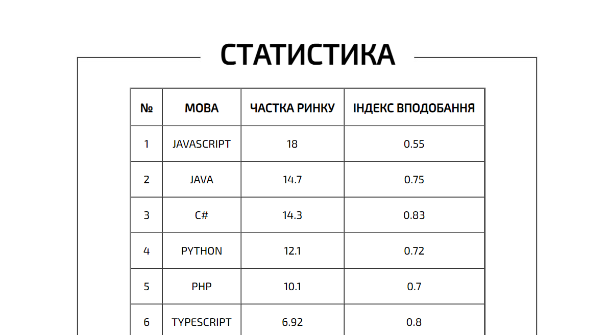

Лабораторна робота №1
Лабораторна робота №2
Лабораторна робота №3
Лабораторна робота №4
Лабораторна робота №5
Лабораторна робота №6
Лабораторна робота №7
Лабораторна робота №8
Лабораторна робота №9
Лабораторна робота №2
ВІДСТУПИ
СКРІНШОТИ:

ТЕОРІЯ:
Відступом називається порожній простір зовні від зовнішнього краю рамки, полів або вмісту блоку. Рамки та поля не є обов'язковими і можуть бути відсутні, так що спосіб формування відступів залежить від ситуації. Як і у випадку з полями, застосовують вираження «верхній відступ» або «відступ зверху», і їм подібні для інших сторін. Позначення «відступи» слід розуміти як однакове значення відступів для всіх сторін.
Для відступів характерні наступні особливості.
Відступи прозорі, на них не поширюється колір фону або фонова картинка, визначена для блоку. Однак якщо фон встановлений у батьківського елементу, він буде помітний і на відступи.
Відступи на відміну від полів можуть приймати від'ємне значення, це призводить до зсуву всього блоку у вказаний бік. Так, якщо задано margin-left:-10px, це зрушить блок на десять пікселів вліво.
Для відступів характерне явище під назвою «схлопування», коли відступи у прилеглих елементів не підсумовуються, а об'єднуються між собою.
Відступи, задані у відсотках обчислюються від ширини блоку. Це стосується як вертикальних, так і горизонтальних відступів.
margin: 20px; -> задає зовнішній відступ між рамкою та межами блоку
border: 10px; -> задає параметри рамки, якщо вона потрібна (можна задати кольори, стиль, товщину...)
padding: 10px; -> задає внутрішній відступ контенту